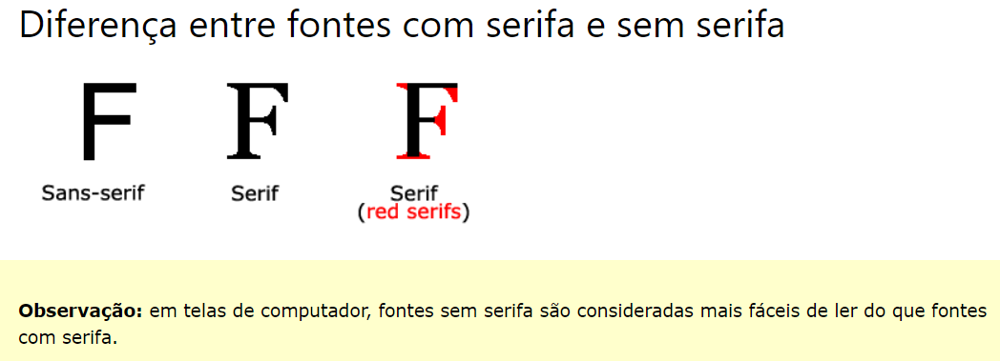

Fontes
- Serif - As fontes com serifa têm um pequeno traço nas bordas de cada letra.
Eles criam uma sensação de formalidade e elegância.
- Sans-serif - As sem serifa têm linhas limpas (sem pequenos traços
anexados). Eles criam um visual moderno e minimalista.
Monospace - aqui todas as letras têm a mesma
largura fixa. Eles criam uma aparência mecânica.
- Cursive - cursivas imitam a caligrafia humana.
- Fantasy - Fontes de fantasia são fontes decorativas/lúdicas.
